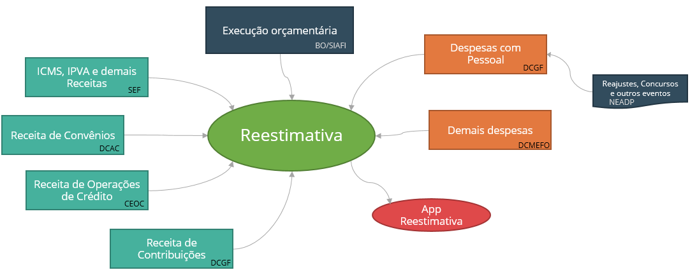
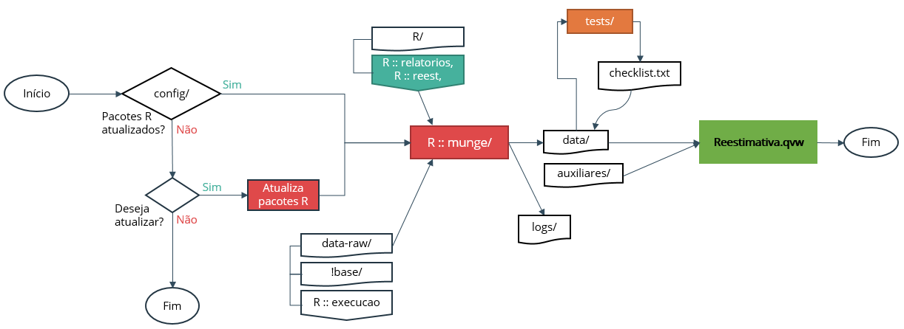

A Reestimativa é um processo da DCGF/SCPPO que combina informações fiscais/ orçamentárias para auxiliar a tomada de decisão gerencial na esfera do Planejamento e Orçamento no Governo de Minas. Em especial, a Reestimativa cria, reúne e disponibiliza informações e análises sobre a execução orçamentária, projeções de receitas e despesas e outros indicadores e dados fiscais.
A Secretaria de Estado de Fazenda (SEF) é a responsável geral pela elaboração das previsões da receita. Com exceção das projeções de receitas de convênios, de operações de crédito e de contribuições, todas as demais previsões de receitas são elaboradas pela SEF.
A previsão das receitas de convênios é de responsabilidade da Diretoria Central de Acompanhamento de Convênios (DCAC). Na elaboração de uma dada Reestimativa, esta previsão deve ser solicitada pela DCGF à DCAC.
Já a previsão das receitas de operações de crédito é de responsabilidade da Coordenação da Execução das Operações de Crédito (CEOC) e também deve ser solicitada pela DCGF no momento da elaboração de uma Reestimativa.
A previsão das receitas de contribuições, por sua vez, é de responsabilidade da própria DCGF, que também elabora a previsão das despesas com Pessoal e Encargos sociais, a partir de dados da execução orçamentária e de informações disponibilizadas pelo Núcleo de EstatÃstica e Acompanhamento da Despesa de Pessoal (NEADP).
Despesas de caráter obrigatório como atendimentos constitucionais, transferências a municÃpios, PASEP, complementação, entre outras, também são estimadas pela DCGF.
As demais estimativas de despesa são consolidadas pela Diretoria Central de Monitoramento da Execução FÃsica e Orçamentária (DCMEFO).
As informações produzidas e reunidas no processo da Reestimativa são consolidadas em um aplicativo de visualização de dados (Qlikview). Esta seção descreve o fluxo de construção do aplicativo. Todo esse processo é executado dentro do ambiente do GNU Make/Makefile, que será descrito em outra seção.

A construção do aplicativo começa com um teste de requisitos. O processo munge depende de pacotes do R. Estes pacotes devem estar na versão especificada na pasta config/. Se algum destes pacotes estiver em versão diferente da necessária, o usuário terá a opção de atualizá-lo no decorrer do processo, ou encerrar o processo e fazer a atualização manual do pacote.
O processo Munge transforma e reúne as bases de execução e previsão da receita e despesa para uso no Qlikview.
Os dados da execução do ano corrente são importados da pasta data-raw/. A execução de anos anteriores, bem como dados da LOA, são obtidos do pacote execucao no R.
Os dados da reestimativa, por sua vez, são importados dos arquivos !base_rec.xlsm e !base_desp.xlsm, disponÃveis na pasta da Reestimativa na rede interna da SCPPO.
Os scripts em R da pasta munge/ aplicam critérios sobre as bases da receita e da despesa e as consolidam em três arquivos na pasta data/, prontos para serem carregados no Qlikview:
Se algum erro ocorrer durante este processo, as mensagens de erro e de execução do processo serão salvas na pasta logs/.
Nesta fase do processo, as bases geradas pelo processo Munge e salvas na pasta data/ são submetidas a uma bateria de testes. São verificadas consistências internas esperadas nas bases da Reestimativa, como, por exemplo, fechamento de fontes, receitas e despesas intraorçamentárias da Saúde, receitas e despesas de Complementação, etc.
O resultado dos testes, indicando quais passaram e quais falharam, são salvos de volta na pasta data/, no arquivo checklist.txt.
Por fim, os arquivos rec.csv, desp.csv e suplementacao.csv na pasta data/ são carregados no Qlkiview e disponibilizados ao usuário.
Além dos dados, o aplicativo em Qlikview também importa os resultados da fase Tests e arquivos auxiliares que fazem a chave entre código e descrição de variáveis como Ação, Fonte, Elemento e Item.